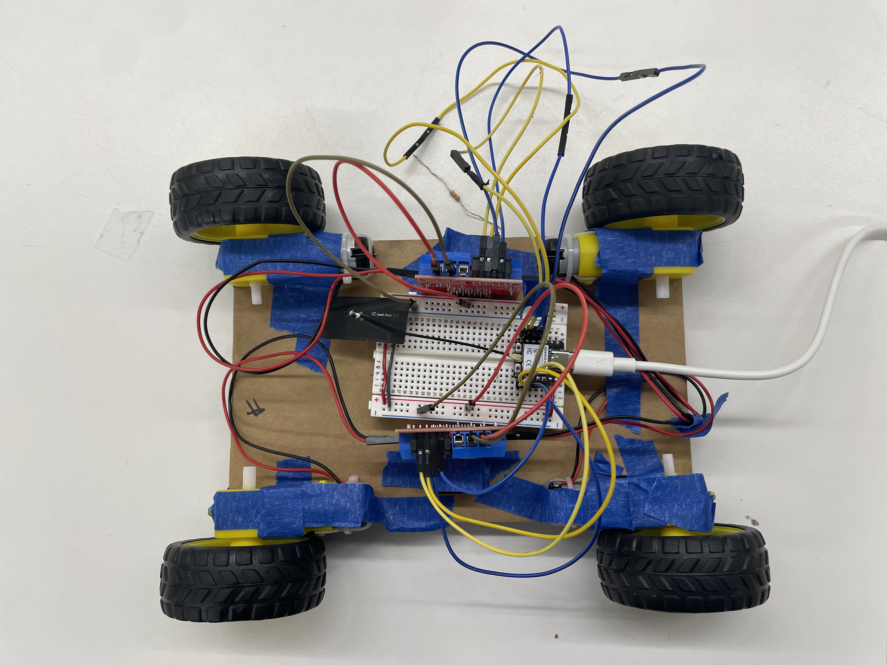
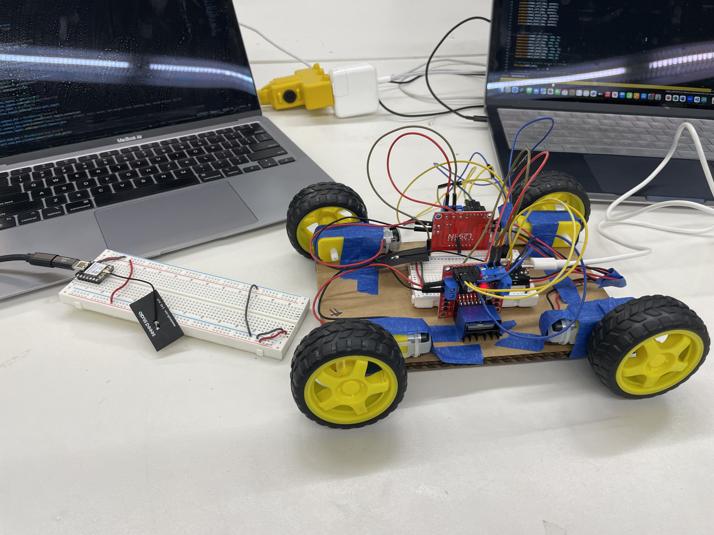
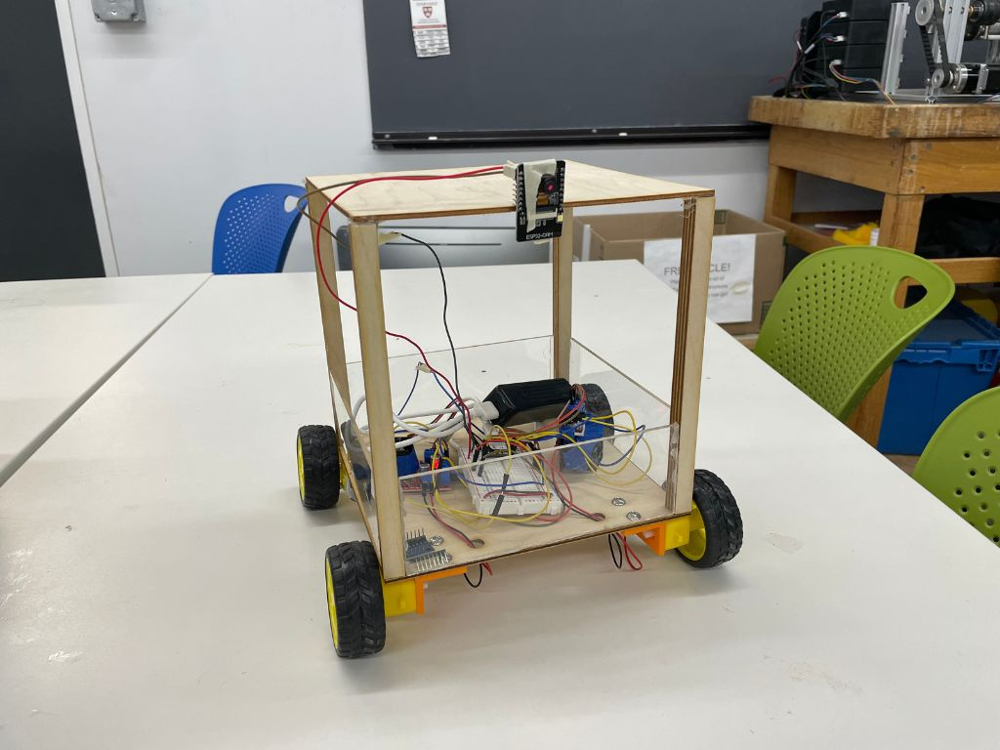
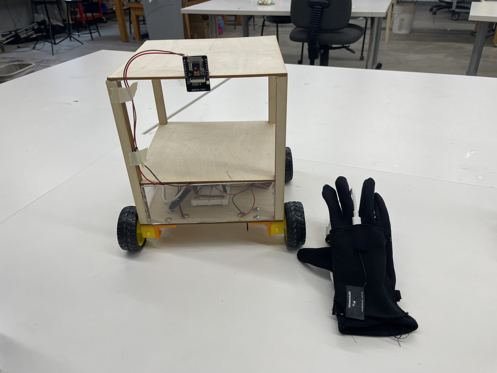

<div class="textcontainer">
<p class="margin"></p>
<h3>Final Project: Moving Table </h3>
<video controls width="850">
<source src="table demo.mp4" type="video/mp4">
</video>
<p> While working in manufacturing this past summer, I saw that parts, tools, and heavy equipment would often have to be transported
around the factory. This was often inconvenient, especially when you have your hands full. In other situations, I saw that it could
be helpful to have a mobile workspace or a way to easily extend you workspace when needeed. To help in these situations, I thought
it would be fun to make a moving table that could move with the user.</p>
<h4>How it works</h4>
<p>The table is controlled by two ESP32 microcontrollers. There is one on the table itself and one on the glove. The two microcontrollers
communicate through ESP-NOW. Here is a brief summary of what each of the ESP32 microcontrollers do.
<h5>Motor ESP32</h5>
<p>The ESP32 attached to the table controls the motors. It receives instructions from the glove ESP32 on which direction it should move.
The ESP32 then communicates with the motor drivers to rotate the wheels accordingly. </p>
</p>
<h5>Glove ESP32</h5>
<p>The ESP32 attached to the glove processes acceleration data from the accelormeter/gyro (MPU-6050 has both) and transcribes that into
directions for the motors. It then sends these directions to the Motor ESP32 to move the table. </p>
<p>For the full code with comments:</p>
<a href="motor_code.ino" download="motor_code.ino">Motor ESP32 Code</a>
<p class="margin"> </p>
<a href="updated_gyro_controller.ino" download="updated_gyro_controller.ino">Glove ESP32 Code</a>
<p class="margin"> </p>
<h4>BOM</h4>
<ul>
<li> 2 ESP32 XIAO </li>
<li> 2 L298N Motor Drivers </li>
<li> 1 MPU 6050 Accelerometer</li>
<li> 1 ESP32-CAM</li>
<li> 4 DC Motors </li>
<li> 4 Wheels </li>
<li> 2 USB Batteries </li>
<li> 2 Breadboards </li>
<li> 1 Glove </li>
<li> Wires</li>
<li> Wood </li>
<li> Acrylic </li>
</ul>
<p class="margin"> </p>
<h4>Iteration Timeline</h4>
<h5>Iteration 1</h5>
<p> I built my first iteration of my moving table for MVP week. My goal for this week was to be able to control and move all 4 wheels.
During this iteration, I started by implementing WASD controls that allowed you to control the motors through the 2 L298N motor
drivers from your laptop. I was able to get all the wheels moving individually and get general forward/backward and rightward motion
with the table prototype.
</p>


<p> I was pretty happy with my MVP since I had not worked with any hardware before this class. I had two primary issues to solve though.
The first was that my controls kept me stuck to my laptop, which defeated the portability of the table. The second was that not all
my wheels would rotate when they all had to move. Usually, the back left wheel would not move while all the other wheels would be able
to move.
</p>
<p class="margin"> </p>
<h5>Iteration 2</h5>
<p>For this iteration of the table, I added two new features to the table: </p>
<ol>
<li>Camera</li>
<p> The first thing I added to the table was a live camera feed. I used the ESP32 CAM and set up the live feed
via web server. The device streaming the feed must be connected to the same Wifi server as the ESP32. Now,
we can see where the table is moving and control it out of our line of sight.
</p>
<li>Updated Controls</li>
<p> Previously, the table was controlled by WASD keyboard input. While this was a good star to get things moving,
this control system would force you to bring your laptop with you if you wanted to use the table. This would
kinda defeat the point of the table since you wouldn't be able to keep your hands free.
</p>
<p> After networking week, I realized I could use the MPU-6050 gyro/accelerometer to control the movement of the
table. This way, the table could really "follow" you without needing a literal remote control. To implement the
new control system, I adapted our gyro code for turret head movement to instead translate gyro tilt data into
movement instructions for the motors (forward, backward, left, right). This way, I only had to update the controller
ESP32 code.
</p>
<p> Now, when you tilt the gyro, the table will move accordingly (tilt forward, move forward, etc.)</p>
</ol>
<a href="gyro_controller.ino" download="gyro_controller.ino">Gyro Controller Code</a>
<p class="margin"> </p>

<p class="margin"> </p>
<video controls width="400">
<source src="table_tilt_control.mp4" type="video/mp4">
</video>
<video controls width="400">
<source src="table_cam.mp4" type="video/mp4">
</video>
<p>I was still having an issue with one of the wheels refusing to move, even after individually replacing each piece
of hardware and checking the software. I'll have to take a look at it again. Also, I somehow managed to flip the
directionality of left/right tilt orientation, but that should be a quick fix.
</p>
<h5>Iteration 3</h5>
<p>For my final iteraiton of the table, I updated my gryo control logic, integrated the gyro into a glove, fixed the wheels/motor
control of my table, and mounted my ESP32-CAM to my table..
</p>
<h5>Glove Control Integration + Gyro Logic Update</h5>
<p>I fully integrated the gyro into a glove to allow users to control the table just by pointing their hand. Doing this made me
realize that the current gyro controls would make controlling the table awkward (for example, the user would have to keep the
palm of their hand parallel to the floor while walking), so I also updated the gryo controls to account for this (the default
position now being the hand resting at the user's side). I also sewed a pocket into a glove to hold they gryo and its breadboard.
</p>
<h5>Motor Debugging</h5>
<p>After many attempts at hardware debugs and replacements, Bobby and I did some further research and realized that the reason one
of my wheels refused to move was because of how the PWMing software worked, which allowed for only 6 PWM channels. The problem was,
I was trying to PWM 8 channels (2 per wheel), so one of my wheels simply was not being properly powered.
</p>
<p>To resolve this, I ended up just allowing both of the right motors to share the same pins on my ESP32 since both of those wheels
would always be moving together. Additionally, I cleaned up the turning logic of the wheels. Instead of having the inner wheels rotate
slower when turning, I adjusted my motor control code so that the inner wheels would rotate backwards when turning. This drastically
improved the smoothness of the table's turns.
</p>

<p class="margin"> </p>
<h4>Reflections:</h4>
<p>Coming into this class having never touched any hardware (other than my laptop) before, I found this project to be very
rewarding. I ended up being able to implement pretty much my original idea for my final project and it was super cool to see
how my idea came to life over the course of the class.</p>
<p>The most challenging part of the this project was definitely working with the hardware. As I was building my prototypes, I would
often run into hardware problems. I found debugging hardware to be much more difficult than debugging software. When I first started,
I usually had no idea where to look when I had a hardware problem (and would often scrutinize code instead of wires). Sometimes, it
would just be a faulty piece of hardware, or it could be some inherent characteristic of the hardware I didn't know about (like the
PWM channels).
</p>
<p>Additionally, I realized there were a lot of things I don't think of while working with hardware. For example, when I was designing
my motor mounts, I had to go through multiple design changes as I realized I doing a lot of silly things (like not flipping the
orientation of the motor mounts or forgetting to account for the thickness of the mount itself).
</p>
<p>If I were to improve this project in the future, I would like to scale the size of the table up and increase its movement speed
so that it could be more pratical to real life scenaries and be more convenient to use. I would also like to make greater use of the
camera by implementing an auto-dock feature that allows the table to dock based on a visual cue. I think this udpate would also be
a fun software challenge that would allow me to do more coding in the project.</p>
<p>Overall, I enjoyed the learning process that came with this project. I came away from this project and class having more confidence
to work on hardware projects and with a better idea of the capabilities of hardware and its uses for different projects. I hope to use
this experience to work on new projects that combine both software and hardware in the future (and to continue being in the makerspace)!
</p>
</div>